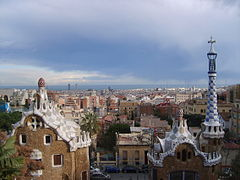
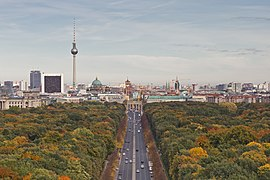
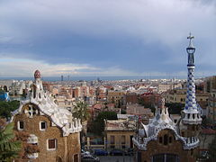
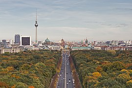
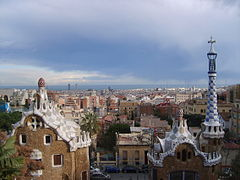
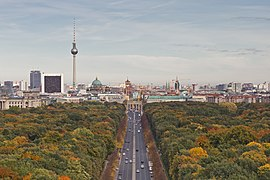

Uniunea Europeană (UE) este o uniune politică și economică a 27 de state membre situate în principal în Europa. Are o suprafață de 4.233.262 km2 și o populație estimată de aproximativ 447 milioane. UE a dezvoltat o piață unică internă printr-un sistem standardizat de legi care se aplică în toate statele membre. Politicile UE vizează asigurarea liberei circulații a persoanelor, bunurilor, serviciilor și capitalurilor în cadrul pieței interne, adoptarea legislației în domeniul justiției și afacerilor interne și menținerea unor politici comune privind comerțul, agricultura pescuitul și dezvoltarea regională. Pentru călătoriile în spațiul Schengen, controlul pașapoartelor a fost eliminat. O uniune monetară a fost înființată în 1999, a intrat în vigoare în 2002 și este compusă din 19 state membre ale UE care utilizează moneda euro.
Cetățenia UE și cea europeană au fost înființate odată cu intrarea în vigoare a Tratatului de la Maastricht în 1993. Uniunea Europeană își are originea în Comunitatea Europeană a Cărbunelui și Oțelului (CECO) și în Comunitatea Economică Europeană (CEE), înființate în 1951 prin Tratatul de la Paris, respectiv în 1957 prin Tratatul de la Roma. Membrii inițiali ai Comunității Europene au fost: Belgia, Franța, Italia, Luxemburg, Olanda și Germania de Vest. În anii următori Comunitatea s-a lărgit prin aderarea unor noi state membre și și-a crescut puterea prin adăugarea de domenii economice, sociale și politice în competența sa. Tratatul de la Maastricht a înființat Uniunea Europeană sub prezenta denumire în 1993. Cea mai recentă modificare majoră a bazei constituționale a UE, Tratatul de la Lisabona, a intrat în vigoare la 1 decembrie 2009. Regatul Unit a semnalat intenția de a părăsi Uniunea în urma unui referendum din iunie 2016. Astfel, pe 31 ianuarie 2020 Regatul Unit a părăsit definitiv Uniunea Europeană.
| Loc | Numele orașului | Stat | Pop. |
|---|---|---|---|
| 1 | Paris | Franța | 12.183.893 |
| 2 | Madrid | Spania | 6.549.520 |
| 3 | Barcelona | Spania | 5.514.881 |
| 4 | Berlin | Germania | 5.259.363 |
| 5 | Ruhr | Germania | 5.113.487 |

